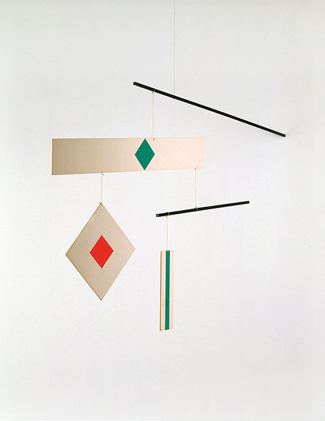
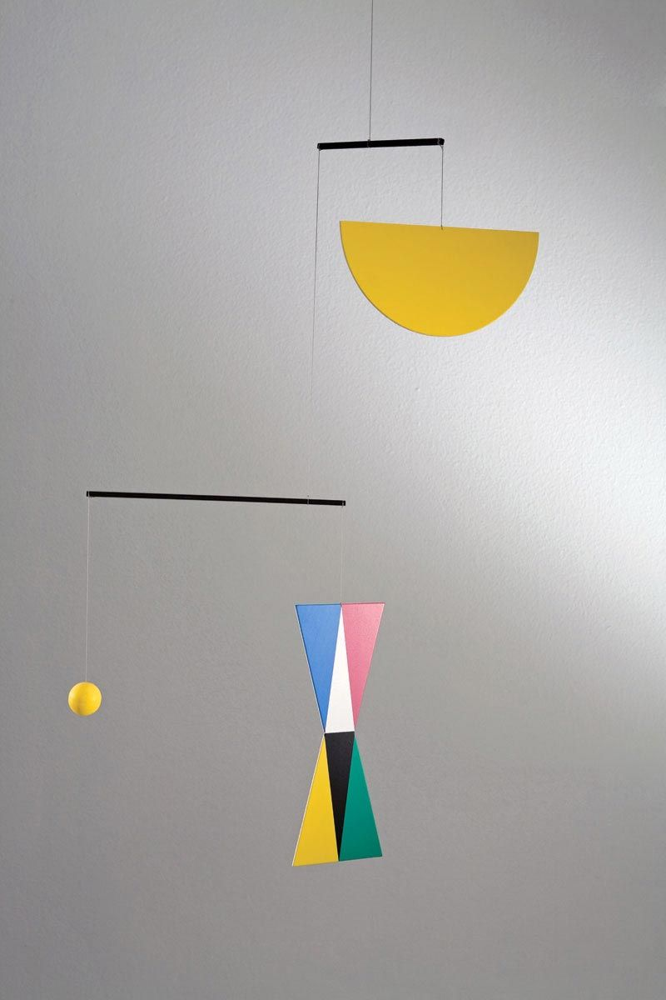
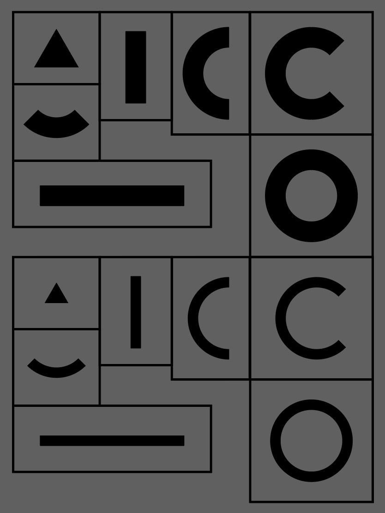
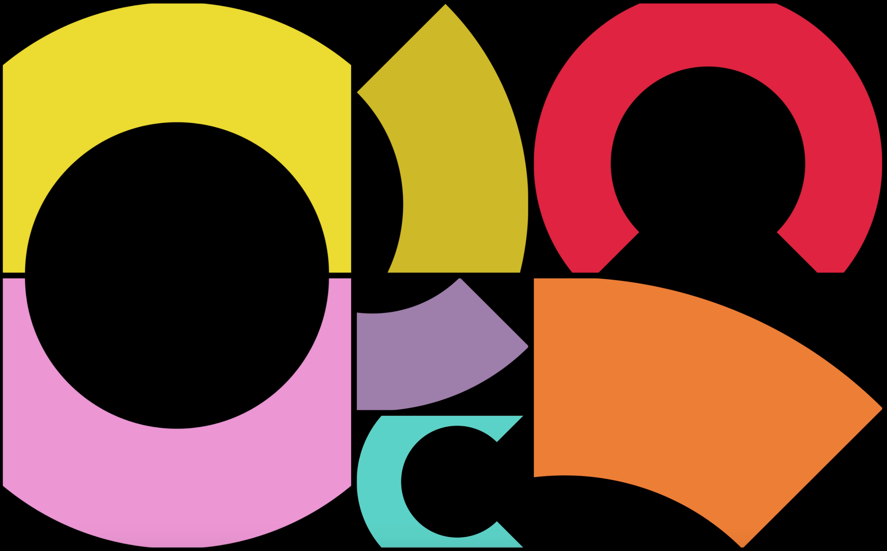
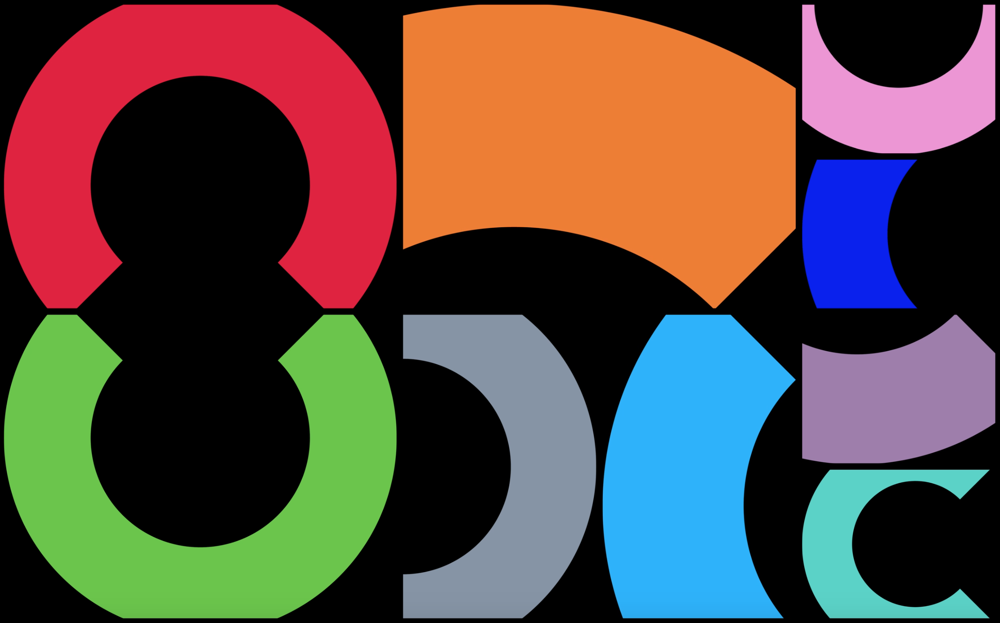
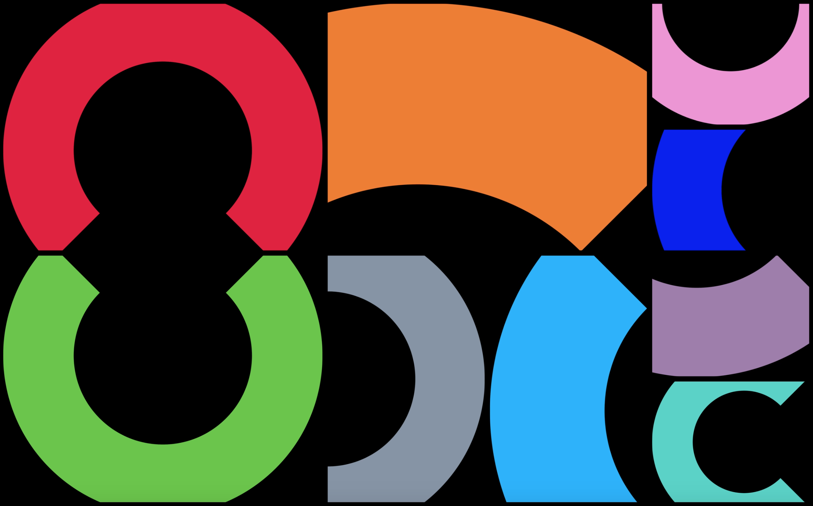

5th March
Okay, I have approximately 5 hours to develop an idea of a screen-saver for MacOS (one of the default modes) and bring it to life. First steps to undertake:
1. Understand each screen-saver mode system, the order of changing images
2. Choose one mode to work with
3. Comprehend the rhythm and choose a direction (modularity? text? storytelling?)
1. Understand each screen-saver mode system, the order of changing images
2. Choose one mode to work with
3. Comprehend the rhythm and choose a direction (modularity? text? storytelling?)
11:03
 
I've chosen shifting tiles preset and decided to experiment with modularity, as long as this mode allows to create a whole image out of a predefined set of details.
In relation to this I've recalled Bruno Munari's 'Useless Machines', a series of kinetic sculptures that are so delicately assembled that they stay in a perpetual oscillation. I am immensely inspired by the image of modules that each second construct a new composition, never the same, always moving. It comes with Kundera's idea of unbearable lightness of being, the inability to stop the moment and the beauty of ephemeral structures, temporality. Want my screen-saver to correspond to it.
11:20

Recalled a little thing I started to work on during a previous term — a modular collection of shapes to construct all alphabet letters.
Maybe I'll give it a try now, without any typographic implications though.
11:36


ATTEMPT 1 (failed) Modular circular lines (deriving from alphabet set)

The problem: badly matching shapes, obvious sews between frames, doesn't look modular, no compositions created in the process, no singular image as a result. Also I was
What can be done? Filled shapes instead? It may be a solution at least for mismatching contours.
10:33

10:33